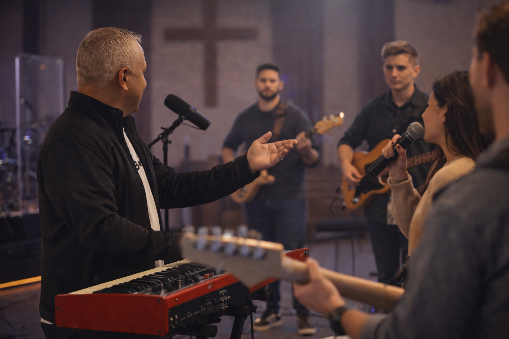

Worship Reflection
What We Forget in Worship
When worship becomes routine, we often lose sight of what truly matters. This reflection explores the heart behind worship and how to return to a place of authenticity, surrender, and connection with God.
Worship Reflection
In many churches today, worship has become something familiar, almost automatic. But worship was never meant to become routine. It was meant to be intentional, sacred, and centered on the presence of God.
Worship Reflection
When worship becomes routine, we often lose sight of what truly matters. This reflection explores the heart behind worship and how to return to a place of authenticity, surrender, and connection with God.
Recommended Gear
An affordable and reliable wireless in-ear monitoring system perfect for worship teams. Provides clear audio, mobility, and better stage communication.
Natanael Cabrera is a Worship Arts Program Director, worship leader, educator, and multi-instrumentalist who has spent the last decade building volunteer teams, directing live worship experiences, and mentoring young creatives to carry the presence of God with confidence.
His heart beats for discipleship through music, crafting environments where excellence and reverence coexist, and where students discover their voice in the Kingdom story.
Whether he is coaching a church plant or producing resources for classrooms, Natanael’s mission is unwavering: equip the next generation of worshippers with the training, tools, and spiritual depth they need to lead well.


Call or text to book a session.
I work directly with worship teams to help them grow in excellence, unity, and spiritual depth.
From rehearsals and arrangements to leadership and flow, I guide musicians and leaders to build confident, Spirit-led worship environments.
Whether your team is just starting or ready to grow to the next level, these sessions bring clarity, structure, and impact.

Guest music direction, clear arrangements, and sectional coaching so Sunday feels confident and cohesive.
Practical growth plans for volunteer teams and young musicians in musicianship, communication, and spiritual leadership.
A step-by-step roadmap for pastors and creative leads building or rebuilding worship ministry culture and systems.
Custom charts, tracks, and sectional rehearsals for teams that need fresh arrangements with clear execution.
Find beginner-friendly instruments trusted by a music educator.
Carefully selected keyboards, guitars, percussion, and accessories help students, families, and worship teams start strong.
Perfect for churches, schools, and home musicians.
I create complete worship and music programs designed to help churches and schools deliver powerful, meaningful experiences.
From ready-to-use event programs to original music and performance resources, everything is designed from real classroom and ministry experience.
Free Worship Resource
A practical guide created to help worship leaders, musicians, and church teams lead with heart, purpose, and excellence.
Plug-and-play lessons, devotionals, and music moments that keep children engaged and centered on truth.
Concert-ready scripts, arrangements, and rehearsal plans crafted for elementary and middle school ensembles.
Fresh arrangements, charts, and tracks built for volunteer teams that need clear direction and excellence.